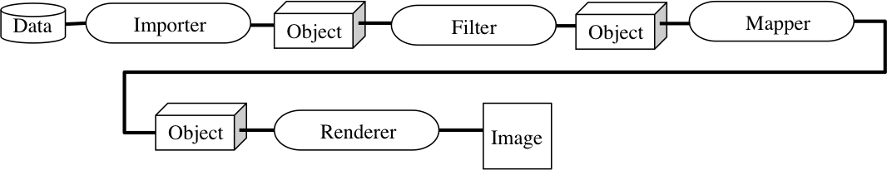

可視化パイプライン
KVS内部ではKVSで定義されている適切なデータ構造（Object）を通してデータのインポート/エクスポートや可視化を行ってきました． これらのObjectはデータ削減や補間，サンプリングなど適切な処理を施してObjectを変換し，ディスプレイに表示していくことがあります．
KVSを用いてこれらの処理を用いるためには，
基本的な可視化パイプラインに沿ってプログラムを作成する必要がります．
可視化パイプラインの構成は以下の通りです．
1) Importer
データをKVS 可視化パイプラインで扱えるデータ構造（Object）に変換します．
例えば，
- 点群データをPointImporterで読み込み，PointObjectへ変換
- 構造型ボリュームデータをStructuredVolumeImporterで読み込みStructuredVolumeObjectへ変換
Importerには他に，
- 画像を読み込むImageImporter
- 線データを読み込むLineImporter
- 面データを読み込むPolygonImporter
- 非構造型ボリュームデータを読み込むUnstructuredVolumeImporter
がある．
2) Filter
次のMapperのための前処理を行うために，ImportされたObjectに対してデータ削減や補間処理を行います．
例えば三重線形補間があります．
3) Mapper
Objectに対して，Rendererのために点やポリゴンなどの幾何形状データに変換する処理を行います．
例えば，
- Objectに対してマーチングキューブ法で等値面を生成する場合：
- MarchingCubeを通してしてPolygonObjectに変換する．
他にも，
- スライス面の作成（SlicePlane）
- メトロポリスサンプリング（MetropolisSampling）
- 等値面の作成（Isosurface）
などがあります．
4) Renderer
Mapperで処理されたObjectに対して，適切な描画方法で画像を生成します．
例えば，
- PolygonObjectならばPolygonRenderer,
- PointObjectに対してはPointRenderer
などがあります．
他にも，
- VolumeObjectに対してRayCastingRenderer
が用意されています．

KVSにおける可視化パイプライン
Modefied at June 16, 2013